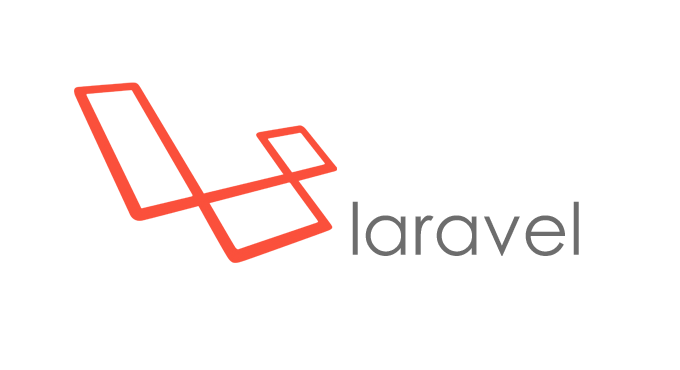
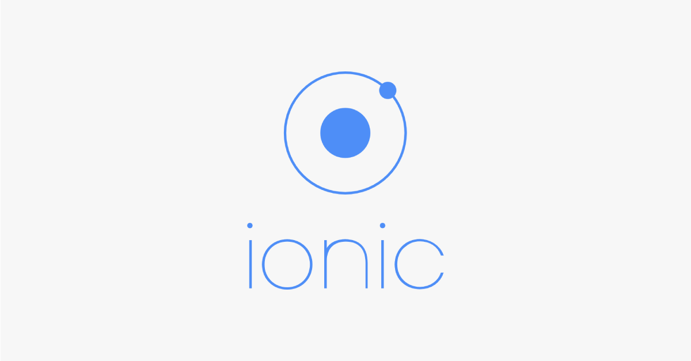

U I D
User Interface Division
Anggota

User Interface Division
Divisi di Laboratorium Jaringan Akses yang bergerak di bidang pengembangan Aplikasi Web & Aplikasi Mobile
Aplikasi Web
Tidak hanya di bagian Front-End saja,
tetapi juga di bagian Back-End
Tools

Front-End

Back-End
Additional Tools
PHP Framework
SCM
Aplikasi Mobile
Berfokus pada Aplikasi Mobile berbasis Android
Tools
Kegiatan Lainnya
- Mengadakan Pelatihan
- Mengajar SG Divisi Programming
- Membantu Mahasiswa/i Tel-U
Terima Kasih
“Code Now or Regret Tomorrow”
- Hakim El Hattab
- reveal.js